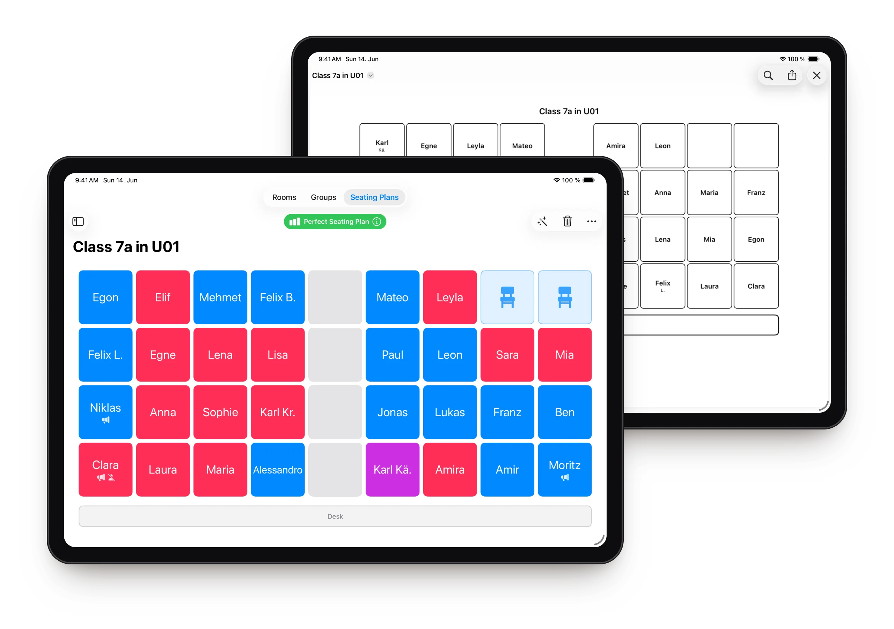
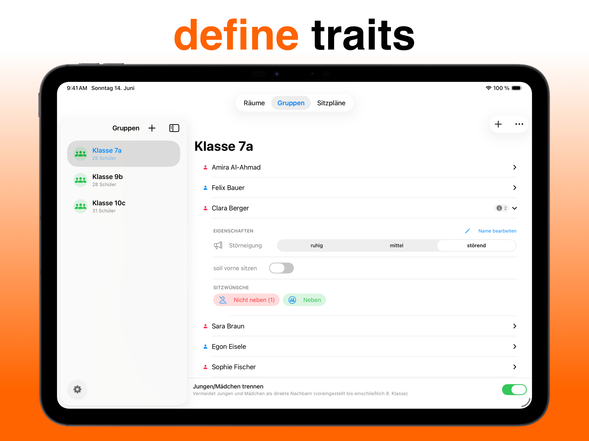
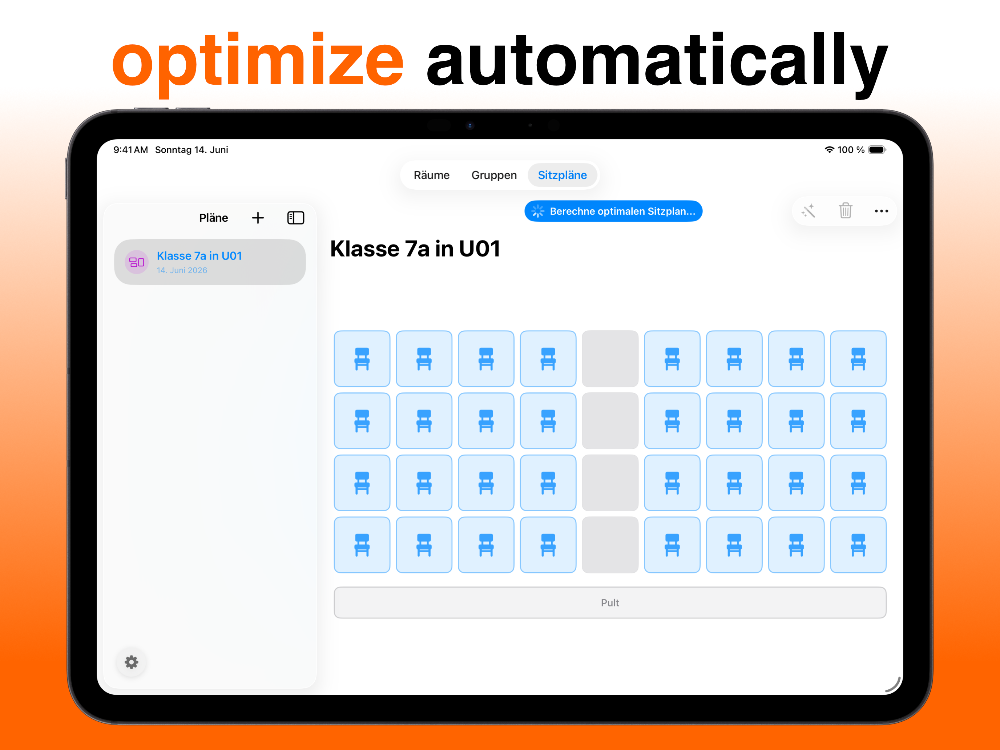
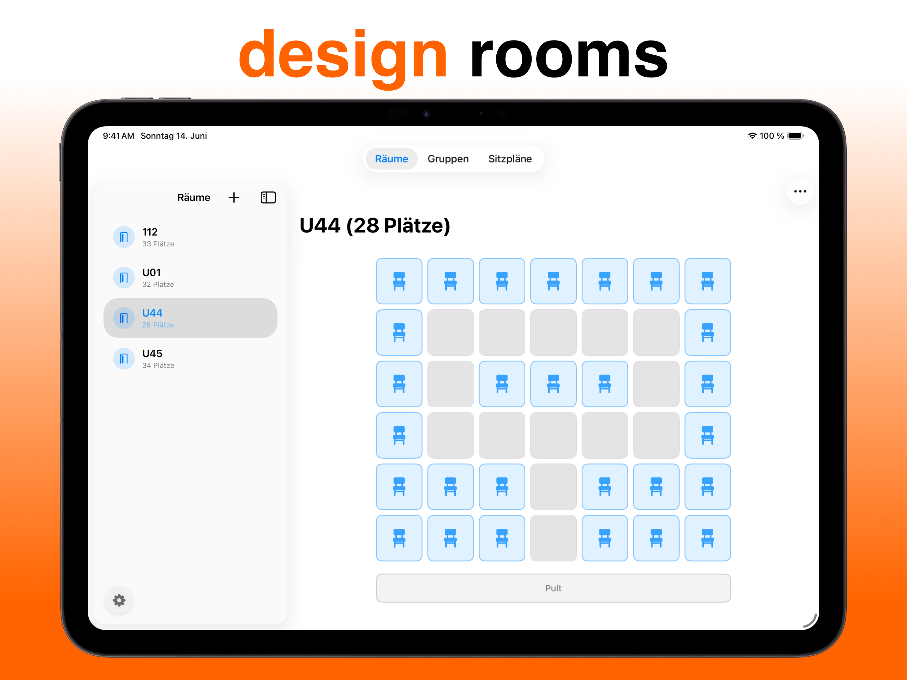
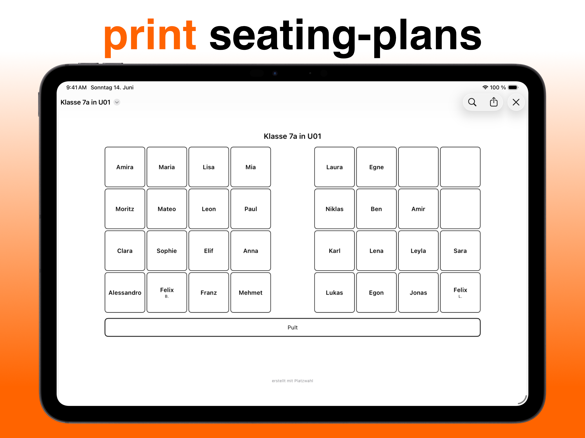

Platzwahl
Seating charts for teachers, created automatically and fairly.






Everything a good seating chart needs.
Seating chart in one tap
One tap seats the whole class, fairly and by your rules.
Your room, exactly
Rows, U-shape or table groups: any classroom can be rebuilt.
Rules per student
Disruptiveness, preferred neighbours and front-row seats go into the calculation.
A score you can follow
A score shows how good the chart is and explains every deviation.
Class from Excel
Import a CSV and the whole class is set up in seconds.
Print-ready PDF
Every chart can be exported as a PDF and printed.
Four steps to a finished chart.
Rebuild your room
Tap seats or paint whole areas with your finger.
Add your class
Type names or import a CSV, then set rules.
Tap “Optimize”
The algorithm finds the best possible chart.
Print
Export as PDF. Need a new chart? One tap.
Further reading
Questions
Who is Platzwahl for?
For teachers of all school types who want to create seating charts quickly and fairly — without spending hours manually rearranging or fiddling with spreadsheets.
How does Platzwahl automatically create a seating chart?
The app distributes students based on individual rules — disruptive behaviour, seating preferences, gender separation — optimally across the available seats. A score shows at a glance how good the chart is and which rules are still violated.
Are student data stored or shared?
No. All entered names and rules remain exclusively on your device. There is no transmission to external servers — neither by us nor by any third party.
Can I manage multiple classes and rooms?
Yes. You can create as many rooms and classes as you like, each with their own seating charts. Everything is saved.
Is there a PDF export?
Yes. Every seating chart can be exported directly as a PDF — clean, effortlessly, immediately ready to print.
Is the seating chart app free?
Yes. Platzwahl is free on the App Store. Platzwahl Pro optionally unlocks unlimited rooms, groups, and seating charts.
Can I import a whole class from Excel?
Yes. Export the class list as a CSV file from Excel or Google Sheets and import it straight into Platzwahl — the whole class is set up in seconds.